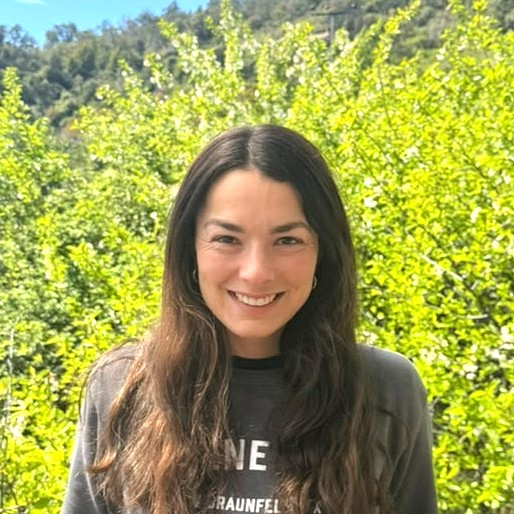
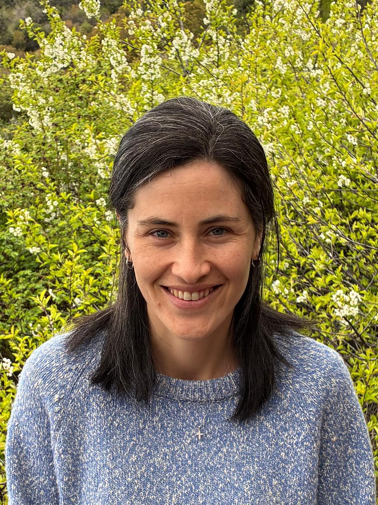
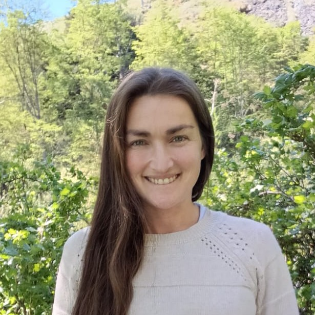
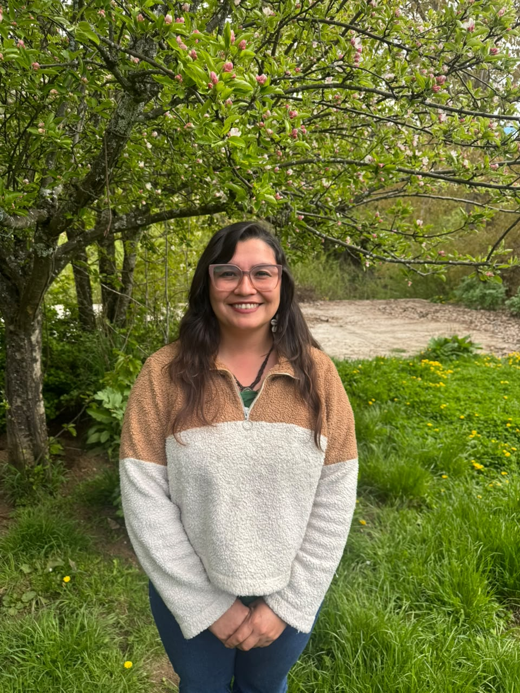
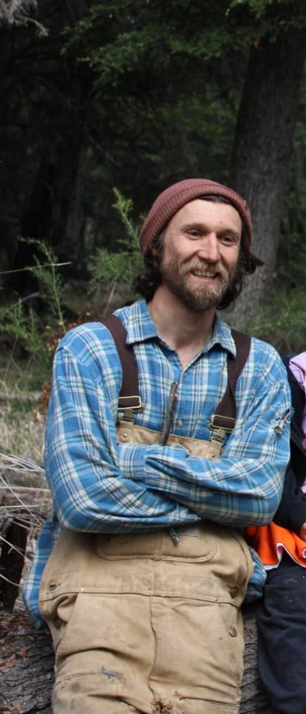
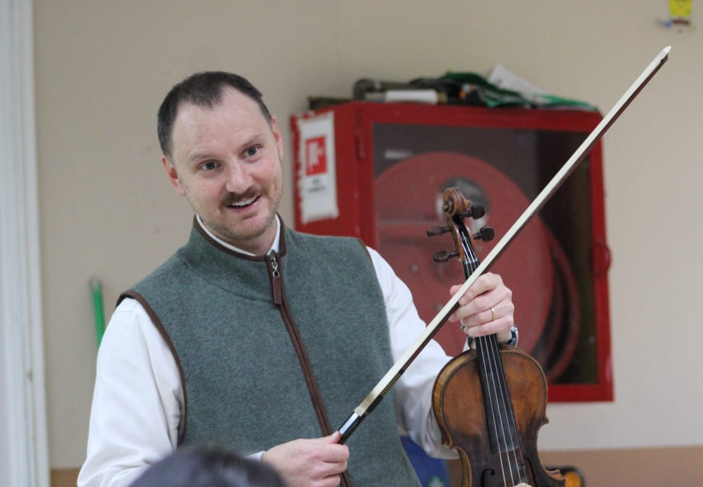

Nosotros
Quiénes somos, qué buscamos y quiénes lo hacen posible.

Quiénes somos
Fundación Cuenca Viva nace desde las familias y comunidades de la cuenca del Lago General Carrera, para ampliar las oportunidades educativas, culturales y formativas de niños, niñas y jóvenes que crecen en este territorio.
Trabajamos junto a las comunidades educativas de Puerto Guadal, Puerto Bertrand y Mallín Grande, construyendo redes y articulando iniciativas que permitan acercar nuevas experiencias y sostenerlas en el tiempo.
Misión
Conectar a niños, niñas y jóvenes con las oportunidades de aprendizaje que existen dentro y fuera de la escuela, reconociendo el territorio como una fuente única de experiencias, conocimientos y posibilidades.
Trabajamos junto a escuelas, familias, organizaciones y personas del territorio para que niños y niñas puedan explorar, crear, descubrir y ampliar su mirada, aprovechando tanto los saberes y experiencias de su comunidad como nuevas oportunidades que conecten su territorio con el mundo.
Porque vivir en un territorio rural y aislado no debiera limitar las oportunidades de aprender y desarrollarse.
Equipo central

Magdalena Baeza Santa María
Directora Ejecutiva

Francisca Berger Rojas
Directora de Proyectos

Ivette Laclote Reyes
Comunicaciones

Paulette Valenzuela Solis
Coordinadora Rutas del Bibliomóvil
Monitores

Cristián Weber
Taller Medioambiental

Javiera Valenzuela
Ruta de la Lectura

James Rudge
Ruta de la Música
Directorio
Fundación Educacional Cuenca Viva
| Cargo | Nombre |
|---|---|
| Presidenta | María Magdalena Baeza Santa María |
| Vicepresidenta | Ivette De Lourdes Laclote Reyes |
| Secretaria | María de los Ángeles Vial Cosmelli |
| Tesorera | Bárbara Cox Alemparte |
| Directora | Francisca Javiera Berger Rojas |
Conversemos
Escríbenos si quieres ayudar, sumarte como aliado o conocer más de nuestro trabajo.